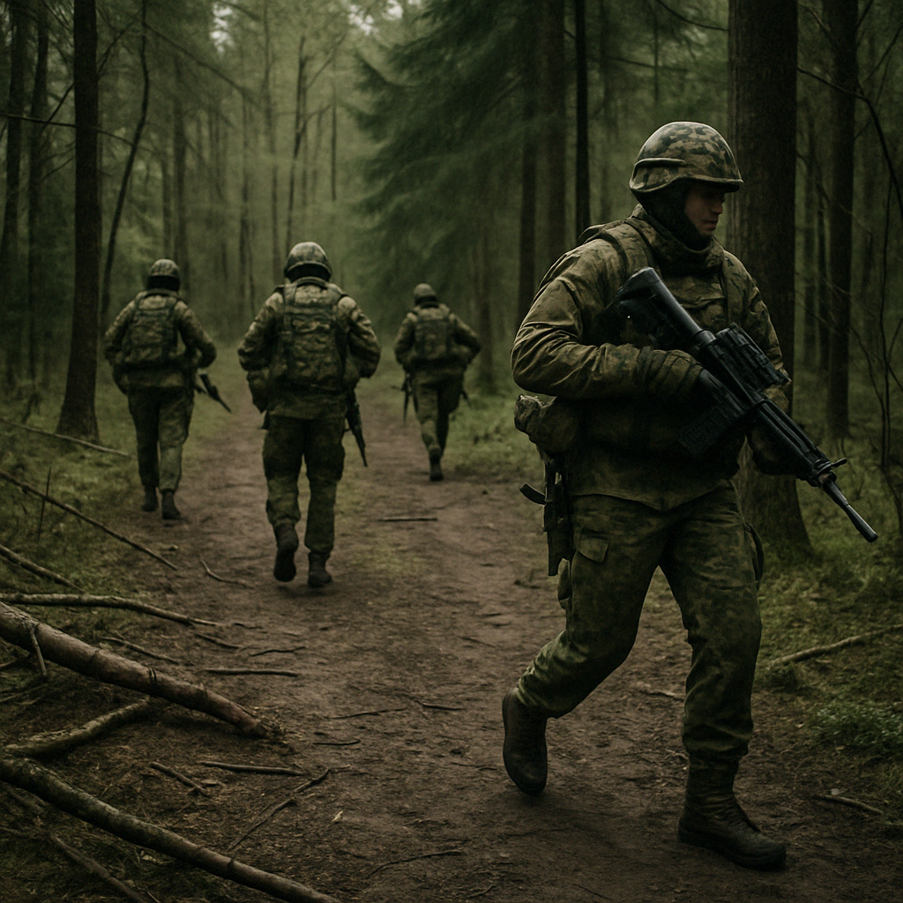
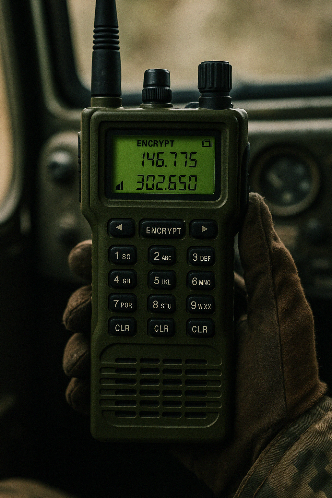

Bakhmut Sector Redeployment
Russian forces have executed a phased redeployment in the Bakhmut sector, shifting mechanized infantry westward to reinforce ridge-line defenses near Ivanivske. Aerial imagery reveals extensive trenching efforts and newly established artillery revetments on the eastern approaches. Thermal overlays confirm intermittent use of camouflaged mortar teams moving between tree lines, operating on suppressed radio schedules to avoid Ukrainian triangulation.
Forward reconnaissance teams report consistent electronic warfare activity in the southern pocket, suggesting the presence of mobile jamming vehicles obscuring UAV telemetry feeds. Analysts believe the redeployment is not just tactical, but part of a wider counter-rotation designed to create force ambiguity and stretch Ukrainian ISR capacity across multiple sectors.
Read More →Kherson Logistics Transfer

Russian logistics in the Kherson oblast have shifted entirely to nocturnal and non-fixed transfer methods. Pontoon crossings are assembled and disassembled under cover of darkness, with satellite heat signatures showing consistent 3-hour cycles of movement across three separate points. Local informants describe an uptick in camouflage netting usage and decoy vehicular patterns meant to mislead HIMARS targeting protocols.
The 45th Engineering Battalion has reportedly activated a pre-fabricated launch dock near Oleshky, allowing for short-duration ferrying of fuel and ammunition to tactical storage depots along the Dnipro. Communications intercepts include oblique references to 'Node Veles', likely an improvised staging area east of the destroyed Antonivskyi bridge.
Read More →Zaporizhzhia Drone Recon Sweep
Ukrainian and allied ISR assets conducted a multi-tiered drone sweep over southern Zaporizhzhia, with overlapping telemetry confirming vehicular repositioning along three artillery corridors west of Orikhiv. AI-assisted analysis of heat signatures and dispersion trails has mapped possible BM-21 launch nodes, confirmed by staggered thermal blooms at regular intervals during the scan window.
Mid-altitude reconnaissance drones operating under ECM-resistant protocols completed grid-pattern flyovers of wooded staging grounds, revealing distinct track compression zones and semi-permanent camouflage net structures. Analysts assess these formations to be temporary battery nests used for short-range harassment shelling, rather than static siege platforms.
Read More →Echo-5 Comms Intercepts
A recent intercept burst from Echo-5 triangulated mobile recon teams operating within a 12km ring outside Tokmak. Signals analysis identified three V2-type encrypted packets containing encrypted sitreps and GPS-locked grid references. The burst was accompanied by low-strength channel handovers, indicating mobile relay nodes changing frequency bands every 90 seconds.
Post-analysis voiceprint mapping linked at least one vocal signature to an operator previously active near Svatove in early 2024. Timecode irregularities suggest the presence of active obfuscation layers, likely injected to confuse pattern-matching systems. Ongoing SIGINT decryption efforts are underway, supported by NATO’s packet-collision reconstruction arrays.
Read More →